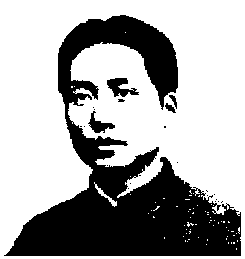

|
Bienvenidos |
 |
". . . Stalin no destaca más que la tecnología y los cuadros técnicos. Sólo quiere la técnica y los cuadros técnicos. Ignora la política y las masas. . . . Stalin no habla más que de relaciones de producción. No habla ni de la superestructura ni de las relaciones entre ésta y la base económica. . . . Stalin habla únicamente de economía; no aborda la política."
Acerca de los Problemas económicos del socialismo en la URSS
de Stalin (1958)
[Nota : Gracias muy especiales a Rafael Masada, quien transcribió TODOS los textos de la Obras Escogidas de Mao Tse-Tung y las Citas del Presidente Mao Tse-tung ; la única contribución mía fue la de añadir las indicaciones del HTML. -- DJR ]
|
1926-37 |
1937-41 |
1941-45 |
1945-48 |
1949-57 |
1958-60 |
PERIODO DE LA PRIMERA
--1926--
PERIODO DE LA GUERRA DE RESISTENCIA
--1937--
PERIODO DE LA GUERRA DE RESISTENCIA
--1941--
PERIODO DE LA TERCERA
--1945--
PERIODO DE LA REVOLUCION Y
--1949--
De la colección:
LA CONSTRUCCION DEL SOCIALISMO
GUERRA CIVIL REVOLUCIONARIA
GUERRA CIVIL REVOLUCIONARIA
CONTRA EL JAPON (I)
CONTRA EL JAPON (II)
Tomo IV
GUERRA CIVIL REVOLUCIONARIA
LA CONSTRUCCION SOCIALISTAS (I)
--1958--
Otro
--1966--
|
From Marx |